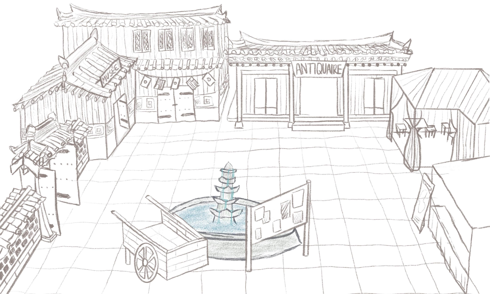

안녕
doc'ko
— QU’EST-CE QUE LE DOCUMENTAIRE INTERACTIF ?
Depuis 2013, les élèves du Master 2 Cultures et Métiers du Web de l’Université Gustave Eiffel et ceux de l’Université de Busan se retrouvent à l’occasion de la réalisation de leurs documentaires interactifs.
Ce projet s’inscrit dans un contexte de travail international qui a débouché sur la mise en place d’un double-diplôme entre les deux universités. Observer les traces du passé, chercher à les raconter : c’est encore une manière d’éclairer ce qui vit, aujourd’hui.
